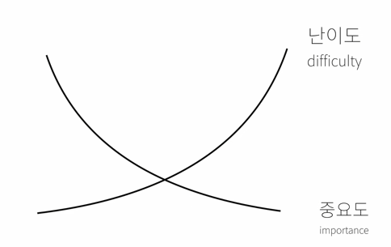

HTML
python 웹 크롤링 수업을 듣기 전에 HTML
에 대해서 수업을 들어서 도움을 꾀하기 위함.
1. 프로젝트의 동기
2. 코딩과 HTML
3. HTML 코딩 실습 환경 준비(Atom)
4. 기본 문법 - 태그
5. 혁명적인 변화 : tag를 알고 나서 삶은 변화했다.
6. 통계에 기반한 학습
7. 줄바꿈
<p> tag를 사용하면, 단락을 문맥상 구분지을 수 있다.
<br> : 여러번 구분할때 사용하면 좋음
css 시각적으로 부족한 부분은 css로 채울 수 있기 때문에 p tag를 사용하는게 유의미 함.
- 검색엔진에 노출이 안되는 것은 존재하지 않는 것과 같다. -
- web이 중요한 이유는 접근성. 모든 장비에서 접근이 가능함.
- 문자를 이쁘게 하기 위해 이미지로 문자를 표현한다면, 시각장애인에게는 없는 컨텐츠나 다름없다.
8. 최후의 문법 속성과 img

img 태그 안에 여러 속성들
9. 부모 자식과 목록
목차 :
- 감자튀김
- 햄버거
- 콜라
10. 문서의 구조와 슈퍼스타들
11.
12.
13.
14.
15.
https://opentutorials.org/course/3084/18452